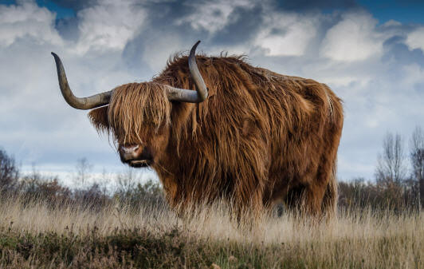
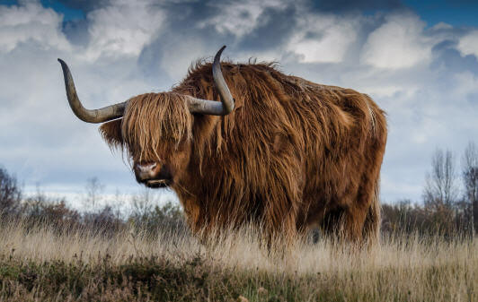

Como mencionamos antes, el lobo es carnívoro y su alimentación se basa principalmente de animales de tamaño medio:
No obstante, alimentación del lobo depende mucho del hábitat en el que se encuentre, ya comentamos anteriormente que son animales con mucha capacidad de adaptación. De hecho, se conocen otras presas dentro de un ámbito marino como pueden ser las focas. En Alaska y Canadá se conoce algún caso de lobos que han comido salmón.
Aunque los lobos viajan siempre en manada, existen casos de lobos que viajan solos. Se desconoce el motivo que ha podido llevar a que estos especímenes se queden sin compañeros de su misma especie. Estos lobos solitarios se ven obligados a cazar presas más pequeñas (serpientes, aves o roedores). En situaciones de carestía de alimentos son capaces de comer frutos o plantas.
Conseguir la suficiente cantidad de comida para una manada es complicado. Por eso, cuando se consigue cazar una pieza se la suelen comer entera. Solo dejarán la piel, el cráneo y huesos más largos.
Mientras parte de la manada ejerce la función de la caza, otros se quedan protegiendo a los lobeznos. Los cazadores se encargarán de proveer comida a ambos grupos de lobos.
Un lobo suele comer un kilo y medio de carne al día, pero para poder reproducirse con éxito esta cantidad debe ascender a tres kilos. De una sola vez, un lobo hambriento puede llegar a comerse 10 kilos de carne. No obstante, es un animal que está preparado, si la situación lo requiere, para pasar varios días sin comer.
 
